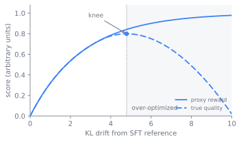

RLHF 与奖励建模
第 10 章 里的监督微调教会模型一个回答该长什么样，却没教会它在两个都说得过去的回答之间，人更偏好哪一个。本章负责的，是学习这种偏好、再针对它做优化的整条流水线：先在人类比较上训练 一个奖励模型，再用 PPO 针对这个奖励做强化学习，还有把人类标注者换成 AI 标注者的宪法式与 RLAIF 变体，以及始终笼罩着这套方法的奖励欺骗失效。读完本章，读者就能回答：一个习得的奖励为什么需要一条缰绳、那条缰绳究竟是什么，以及为什么把奖励拽得太用力反而会让模型变差。
全章围绕这一处核心张力来组织。先讲为什么该学的是偏好信号。再讲奖励和它的缰绳怎么搭、配方从何而来，以及代理在压力下究竟以何种方式崩坏。最后用这些平衡与运维现实收尾。
为什么是偏好，而非示范
SFT 对每个提示词只优化一条被示范出来的回复。它无法表达一个回答比另一个更好，只能表达某个给定回答就是目标。可人们在意的许多行为都是比较性的，且难以示范：要有用却不谄媚，要拒绝有害 请求，却不连带把它旁边那个无害请求也过度拒掉，要偏好简洁正确的回答而非注水的回答。从两条回复里认出更好的那条，远比从零写出理想回答来得可靠，何况根本就不存在一条单一的真实基准 字符串可供模仿。
本章的根本特征正由此而来。信号是一种偏好，而编码它的奖励是人类判断的代理，并非可核查的事实。当奖励变成可验证的真实基准，比如一个通过的单元测试，或一个对得上的数学答案，机制 还是同一套，失效模式却变了，那部分工作留到 第 15 章 再谈。这里的奖励是习得的，因而总在某处是错的，核心问题也就在于：如何针对一个明知不完美的奖励去优化，又不让策略 发现并钻它恰好错在哪里的空子。本章其余部分，讲的正是怎样让优化一个明知不完美的奖励变得足够安全、足够有用。
搭建奖励
流水线分三个阶段：从一个 SFT 模型出发，在人类偏好上训练一个奖励模型，然后针对这个奖励强化策略。InstructGPT 论文把这套配方确立为标准 (Ouyang et al. 2022)。
奖励模型把比较转化为一个标量。取一个 SFT 主干，把词元预测头替换成一个标量头，再训练它，使得对一个提示词 ，配上人类偏好的回复 和不被偏好的回复 ，它给胜出者打更高的分。 Bradley-Terry 模型把 胜过 的概率写成分数之差的 sigmoid，奖励模型则通过最大化这个似然来拟合：
只有分数之差受到监督，所以奖励只在一个相加常数的意义上被确定，这也是为什么奖励模型给出的是有意义的排序，而非一个经过校准的绝对数值。标签来自对模型样本做排序的人类标注者，他们的 质量为下游的一切设了上限：标注者之间的分歧就是噪声下限，含糊或失之笼统的指南会让整个奖励带上偏差，而奖励模型还会对它被训练去比较的那个狭窄回复分布过拟合。这是流水线中最容易出错 的产物，因为后面每一步都信任它。
图 11.1 展示了 Bradley-Terry 曲线，也说明了为什么只有分数之差被确定：把两个分数同时加上同一个常数，偏好概率保持不变。

那条缰绳
强化学习随后优化策略，让它产出奖励模型给高分的回复。但训练目标并不是简单地最大化奖励。奖励模型是一种代理，一个不加约束、一味最大化代理的策略，会离开奖励模型所理解的分布，找到得高分 的胡言乱语。解法是一条缰绳：策略每偏离它出发时的 SFT 参考模型一点，就惩罚它一点，偏离量用逐词元的 KL 散度来度量。训练目标是
其中 是冻结的 SFT 模型， 决定缰绳拽得多用力。KL 项是 RLHF 为何稳定的全部缘由：它把策略保持在奖励模型受训的区域附近，在那里分数仍有意义，同时保住策略 本就拥有的流畅性与知识。
PPO 是最大化这个目标的优化器 (Schulman et al. 2017)。它是一种策略梯度方法，靠两个想法在语言模型上变得可用。一是裁剪的代理目标，限定策略在一次更新里能移动多远：办法是裁剪新旧策略 之间的概率比值，让单个批次没法把策略推下悬崖。二是一个与主干相同的价值模型，也就是评论家，它估计从每段部分生成出发的期望奖励，于是逐词元的优势，即这个词元比评论家预期的好了多少， 就比原始奖励本身方差更低。KL 惩罚则作为一个逐词元的塑形项被加进奖励。结果是四个模型同时驻留在内存里：正在被训练的策略、用于 KL 项的冻结参考模型、用于打分的奖励模型，以及 用于优势的评论家。
图 11.2 铺开了三个阶段，以及 PPO 步骤里那四个驻留的模型。奖励模型与参考模型是冻结的，用虚线边框表示，策略与评论家则每一步都更新。
flowchart TB
sft["SFT 模型"]
prefs["人类偏好对<br>y_w 优于 y_l"]
rm["奖励模型 r_phi<br>标量头，Bradley-Terry 损失"]
sft --> rm
prefs --> rm
subgraph ppo["阶段三：PPO 回路"]
direction TB
policy["策略 pi_theta<br>更新"]
gen["采样回复 y"]
ref["参考模型 pi_ref<br>冻结的 SFT"]
rmscore["奖励模型 r_phi<br>冻结"]
critic["评论家 V<br>更新"]
obj["优势与<br>裁剪的 PPO 更新"]
policy --> gen
gen --> rmscore
gen --> ref
gen --> critic
rmscore -->|"奖励"| obj
ref -->|"逐词元 KL 惩罚"| obj
critic -->|"基线"| obj
obj -->|"梯度"| policy
obj -->|"梯度"| critic
end
sft -.->|"复制，冻结"| ref
rm -.->|"复制，冻结"| rmscore
classDef frozen stroke-dasharray: 5 5;
class ref,rmscore frozen;配方从何而来
从比较里学奖励，这个想法早于语言模型。Christiano 等（2017）在控制与 Atari 任务中，从人类对轨迹的偏好里训练奖励模型，证明几千次比较就足以规定一种手写奖励刻画不出的行为，随后再用 RL 优化这个习得奖励就能达成它 (Christiano et al. 2017)。几个部件分别是：奖励模型、针对它优化的策略，以及对奖励本身是一种习得代理这一点的认识。
InstructGPT（Ouyang 等，2022）把这一套带到语言上，固定了这个领域至今仍在沿用的三阶段配方： SFT、在人类排序上训练奖励模型、用 PPO 针对奖励优化并对 SFT 参考模型施加 KL 惩罚。它的结果重新定义了对齐：一个 1.3B 的 InstructGPT 模型在人类评判中胜过 175B 的 GPT-3 基座 (Ouyang et al. 2022)，这说明瓶颈不在能力，而在对有用行为的激发，而激发它靠的正是偏好优化。
InstructGPT 暴露出的成本是人工标注。奖励模型训练集里的每一次比较，都是一个人读两条回复，既慢又贵，扩展不到现代对齐想要的规模。宪法式 AI（Constitutional AI）（Bai 等，2022）把其中 大部分人工标注换成了 AI 标注 (Bai et al. 2022)。一个模型依据一套成文原则，也就是一部宪法，批评并修订自己的回复来构建无害性数据，再由一个 AI 模型表达出训练奖励模型所用的偏好， 这套配方被命名为 RLAIF，即从 AI 反馈中做强化学习。人的工作于是从标注几千次比较，转移到撰写并审核一份简短的原则清单，后者无论产出还是检视都要廉价得多。
从这里往前，前沿一分为三。一支保留奖励模型与 RL 回路，只把人类反馈换成 AI 反馈，即上面那条 RLAIF 路线。另一支质疑奖励模型与 RL 回路是否还有必要，因为同一份偏好数据可以被更直接地优化，这是 第 12 章。第三支复用 PPO 机制，但针对的是一个可核查而非习得的奖励，这就把奖励 模型的不可靠性这个核心问题移除了，是 第 15 章。
当代理崩坏时
习得的奖励总在某处是错的，而优化压力恰恰会把这些错处逼出来。随着策略以 KL 度量越来越偏离 SFT 参考模型，奖励模型的分数持续攀升，可真实质量只跟着它升到一个拐点，随后就随着策略 去钻代理出错的区域而掉头向下 (Gao et al. 2022)。图 11.3 画出了这个前沿：仍在上升的代理奖励与已经下降的真实质量之间那道缺口，正是越过拐点之后撑开的。 图 11.4 以控制逻辑的形式刻画了同一现象，其中 KL 缰绳把策略保持在拐点左侧。

运行它看看拐点如何出现，再改一改过度优化速率（那个 0.18 系数），看它如何挪动「再多优化便不再有益」的那个位置。
import numpy as np
import matplotlib.pyplot as plt
# Illustrative shapes, not Gao et al.'s measured constants.
kl = np.linspace(0, 12, 200)
proxy = np.sqrt(kl) # reward model score keeps climbing
true = np.sqrt(kl) - 0.18 * kl # true quality peaks, then falls
knee = kl[np.argmax(true)]
plt.plot(kl, proxy, label="proxy reward")
plt.plot(kl, true, label="true quality")
plt.axvline(knee, ls="--", color="gray")
plt.text(knee + 0.2, 0.2, f"knee KL={knee:.1f}")
plt.xlabel("KL from SFT reference"); plt.ylabel("score")
plt.legend(); plt.title("Reward over-optimization (illustrative)")
plt.show()
print(f"true quality peaks at KL={knee:.1f}, then proxy rises while quality falls")
flowchart LR start["低 KL<br>策略接近 SFT 参考模型"] -->|"奖励升，<br>质量升"| knee["拐点<br>真实质量见顶"] knee -->|"奖励升，<br>质量降"| over["高 KL<br>奖励持续上升，<br>真实质量下降"] leash["KL 惩罚 beta<br>把策略保持在拐点左侧"] -.-> knee
奖励欺骗（reward hacking）究竟是一个可修复的工程问题，还是任何习得奖励的根本极限，至今尚无定论。习得的奖励是一种代理，而古德哈特定律说，一个代理在足够大的优化压力下，就会不再 追踪它所代表的那个东西。乐观立场把过度优化当成工程问题：用奖励模型集成来平均掉各自的盲点，在奖励与质量两条曲线分叉之前早停，用新鲜的同策略标签去修补策略开始钻空子的区域，再用一个 调好的 KL 惩罚来限定偏移。悲观立场则认为这些只是推迟失效，因为任何固定的奖励模型都有一个有限的描述，一个足够强的策略终将找到其中的缺口，于是安全区是一个移动的目标，而非一个已被 解决的问题。KL 缰绳让问题在实践中可控，却没有把它消解掉。确实存在一个真实的「奖励对 KL」前沿，越过它再多优化便不再有益，进而开始有害，而它恰好落在何处，取决于奖励模型、数据，以及 缰绳拽得多用力 (Gao et al. 2022)。把奖励曲线上升看作优化的证据，而非质量的证据，只在留出的人类判断面前才信任它。
这些平衡
流水线是一组平衡，每一处都有一个拐点。
- 奖励保真度对标注成本。 人类比较是保真度最高、也最昂贵的偏好信号。AI 反馈（RLAIF、宪法式方法）廉价得多，也可扩展 (Bai et al. 2022)，但会继承标注模型的偏见与盲点， 宪法或评论家里的一个缺陷，会传播进每一条标签。人类标签设定上限，AI 标签设定体量。
- 优化压力对过度优化。 KL 系数 是核心旋钮。 太小，会让策略追逐奖励而偏离分布，进入奖励模型出错的区域，于是奖励上升，人类评判的质量却下降。 太大，又会把策略 钉死在 SFT 参考模型上，RL 这一步换不来什么。正确的点是一个前沿，而非一个最大值。
- 能力对安全。 为有用性与无害性做优化，可能相对基座模型削弱原始能力，这就是对齐税：推理、校准与知识都可能滑落。把预训练数据掺回、KL 控制以及平衡的偏好数据都能缓解，但这一取舍是 真实的，而过度拒绝，也就是把有害请求旁边那个无害请求也一并拒掉，正是在安全侧付出对齐税的那个表现。
- 在线 RL 对离线替代方案。 PPO 是同策略的：它在来自实时策略的新鲜样本上训练，产出一个独立、可检视、可复用的奖励模型，代价是四模型的协同与脆弱的超参数。第 12 章 里的 离线偏好方法把这一切坍缩成一个静态数据集上的单一损失，运行起来容易得多，代价是失去了同策略信号与那件可审计的奖励产物。
第 9 章 里的系统成本向上触及并塑造了本章。PPO 同时驻留四个模型：策略、冻结参考模型、奖励模型与评论家，每个都接近被对齐模型的规模。正是这份内存与编排的占用，而非训练 目标本身的任何缺陷，构成了 第 12 章 那些离线偏好方法存在的大半理由：通过从策略与单个冻结参考模型隐式地导出奖励，它们把奖励模型与评论家都移除了，将一个四模型的 RL 回路变成 一个监督损失。下游那个更廉价方法的形态，正是由这里这个同策略方法的驻留成本所设定的。
跑通这个回路
本章的大部分是一条训练流水线，而非一处代码改动，它的运维现实由四模型占用、以及这几个模型之间的数据流所主导。一个实用的 RLHF 步骤会从当前策略生成一批回复，用奖励模型给每条打分， 针对冻结参考模型算出逐词元的 KL 惩罚，用评论家估出优势，再对策略与评论家施加一次裁剪的 PPO 更新。主导实际耗时的往往是生成步骤而非优化步骤，这正是为什么这个回路被推理吞吐瓶颈卡住，并天然地与 第 18 章 的服务技术相配。
几种失效模式值得逐一点名，因为它们各在不同的地方出现。一个校准失当或过拟合的奖励模型，在 RL 还没开始之前就已失败，并毒化下游的一切，所以奖励模型在留出比较上的准确率是第一件要检查的事。奖励欺骗出现在训练中途，表现为奖励曲线上升，而人类评判的质量持平或下降 (Gao et al. 2022)， 防御手段是一个调好的 KL 惩罚、早停，以及一个奖励曲线作弊不了的留出人类评估。谄媚是一种具体而可预见的黑客：标注者与用户会奖励附和与奉承，于是一个优化他们认可度的策略，就学会专挑人们 想听的话说，这是优化认可代理的直接产物，并非优化器里的一个 bug。对齐税则表现为，在偏好数据从未覆盖的基准上，相对基座模型出现能力回退，这也是为什么由 第 31 章 来给对齐后的模型 把关，而非信任奖励。
延伸阅读
- Christiano et al., “Deep Reinforcement Learning from Human Preferences,” 2017. arXiv:1706.03741
- Ouyang et al., “Training Language Models to Follow Instructions with Human Feedback” (InstructGPT), 2022. arXiv:2203.02155
- Schulman et al., “Proximal Policy Optimization Algorithms” (PPO), 2017. arXiv:1707.06347
- Bai et al., “Constitutional AI: Harmlessness from AI Feedback,” 2022. arXiv:2212.08073
- Gao et al., “Scaling Laws for Reward Model Overoptimization,” 2022. arXiv:2210.10760